1처음 시작하기
- 크롬 또는 엣지에서 앱 주소를 엽니다. (즐겨찾기에 넣어 두면 편합니다)
- 사용할 비밀번호(6자 이상)를 정하고 시작하기를 누릅니다.
- 다른 PC에서 쓰던 자료가 있으면 아래쪽 파일에서 가져오기로 백업·동기화 파일을 고릅니다.
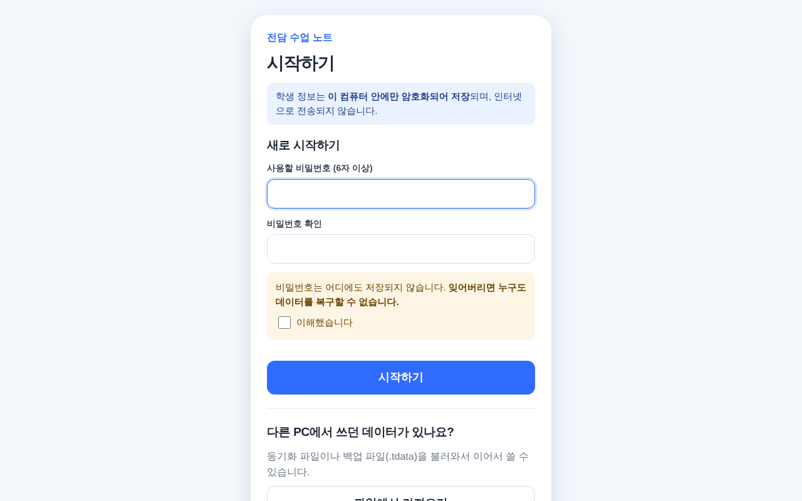
2반과 학생 넣기
- 왼쪽 학급 관리 → + 학급 추가에서 학년·반·색·단원 목록을 고릅니다.
- 반을 열고 명단 한꺼번에 넣기를 누른 뒤, 엑셀에서 번호·이름(·성별) 칸을 복사해 붙여넣습니다. 이름만 한 줄씩 써도 됩니다.
- 전학 간 학생은 지우지 말고 전출에 체크하세요. 기록은 남고 명단에서는 흐리게 보입니다.
학생 정보는 번호·이름만 받습니다. 성별은 선택이며 자리배치·모둠의 '남녀 섞기'에만 쓰입니다.
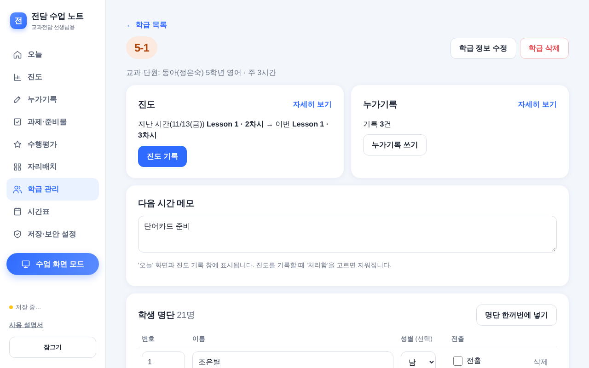
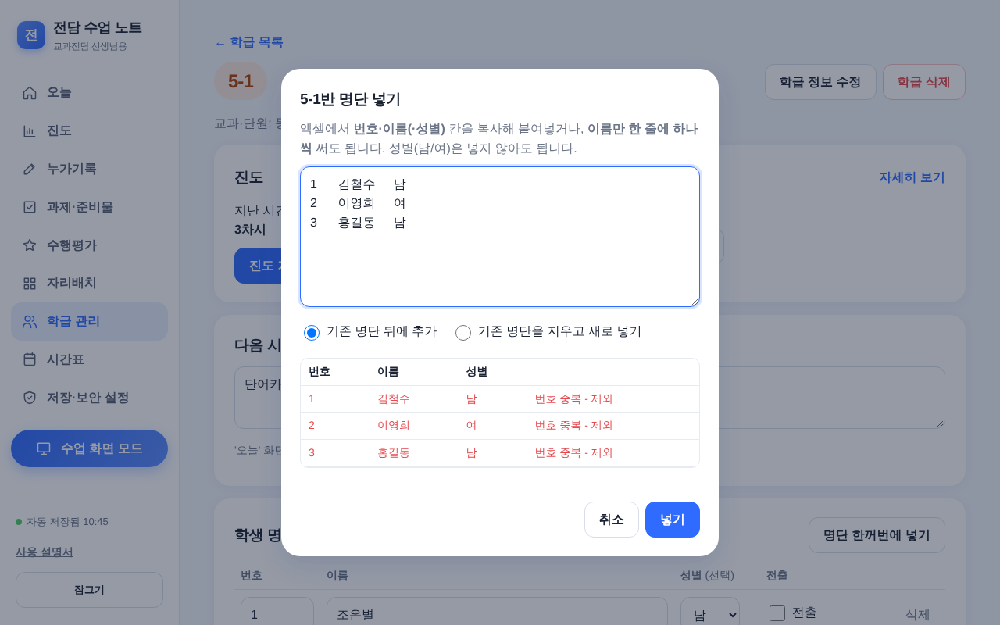
3시간표
왼쪽 시간표에서 요일·교시 칸을 눌러 들어가는 반을 고릅니다. 교시 시간은 왼쪽 칸에서 고칠 수 있고, 하루 교시 수도 바꿀 수 있습니다. 시간표를 넣으면 오늘 화면에 지금 수업이 자동으로 나옵니다.
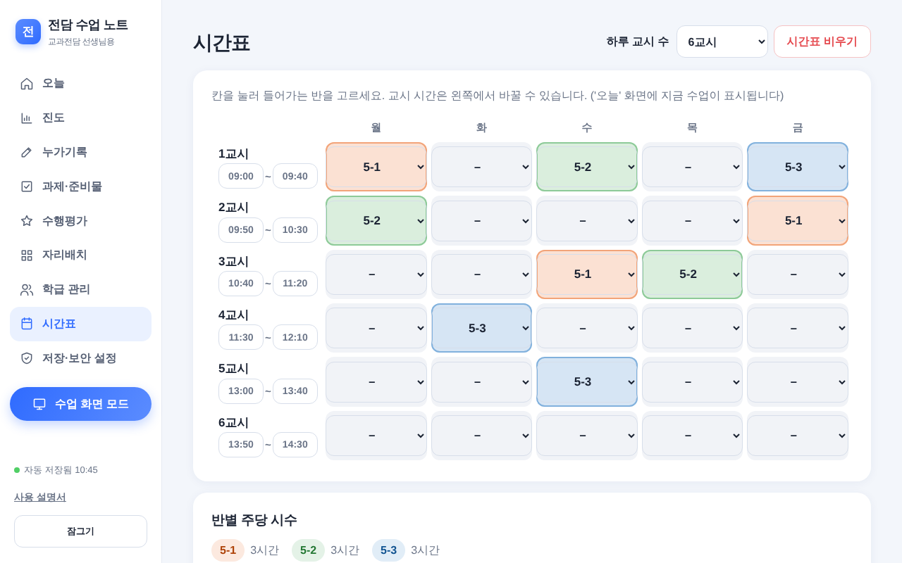
4오늘 화면
- 지금 수업(없으면 다음 수업) 카드에 지난 진도와 이번 차시, 다음 시간 메모, 확인할 과제가 보입니다.
- ✓ Lesson 1 3차시 마침을 누르면 창 없이 바로 진도가 기록됩니다. 잘못 눌렀으면 알림의 되돌리기를 누르세요.
- 메모를 남기거나 다른 차시를 고를 때는 자세히 기록을 누릅니다.
- 아래에는 오늘 시간표와 반별 진도 비교(몇 차시 늦은지)가 나옵니다.
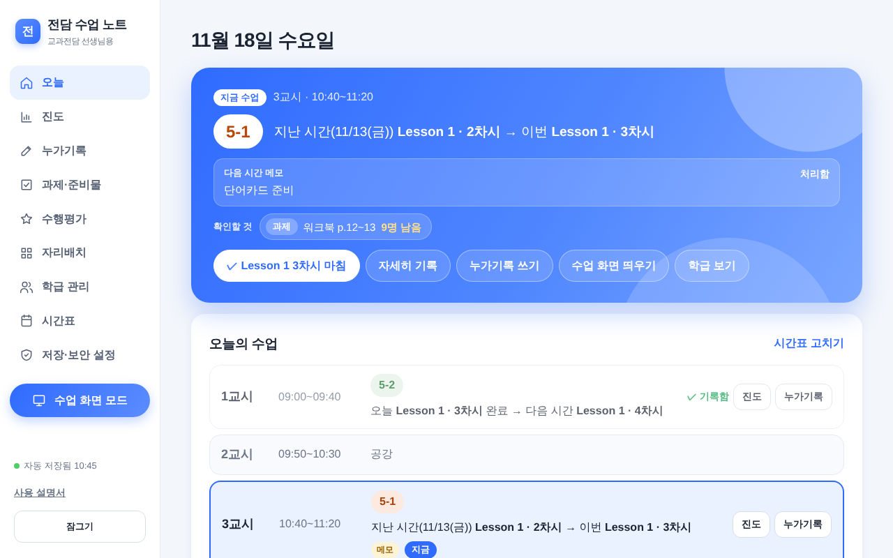
5진도 기록
기록 창은 위에서 아래로 날짜 → 단원(◀ ▶로 넘기기) → 차시 칸 순서입니다. 다음 차시가 미리 골라져 있어서 대부분 기록만 누르면 됩니다. ✓ 표시는 이미 기록한 차시입니다.
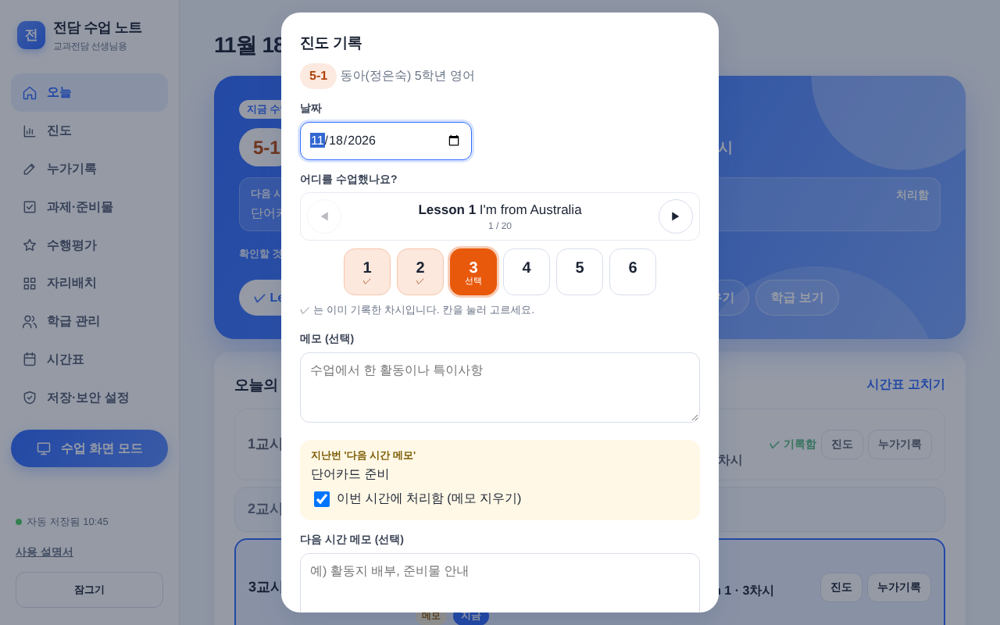
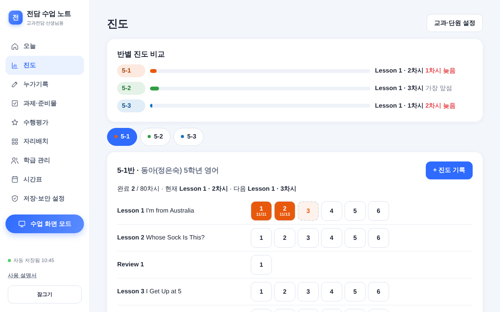
다른 과목 · 다른 교과서 쓰기
진도 → 교과·단원 설정에서 단원 목록을 관리합니다. 동아(정은숙) 5학년 영어가 기본으로 들어 있습니다.
- + 새로 만들기: 이름(예: 5학년 과학), 단원 수, 단원당 차시를 넣으면 '1단원, 2단원…'이 만들어집니다.
- 목차 한꺼번에 넣기: 교과서 목차를 한 줄에 한 단원씩 붙여넣으면 자동으로 정리됩니다. 쪽수(…72)는 지워집니다.
- 공유용 파일로 저장 / 공유받은 파일 가져오기: 만든 단원 목록을 동료 선생님과 주고받습니다. 이 파일에는 학생 정보가 없습니다.
- 반마다 어떤 목록을 쓸지는 학급 정보 수정에서 고릅니다.
6누가기록
- 오늘 화면·반 화면·누가기록 화면의 누가기록 쓰기에서 여러 학생을 한 번에 골라 기록할 수 있습니다. (모둠 칭찬 등)
- 태그(칭찬·학습·태도·과제·상담·기타)는 태그 편집에서 바꿀 수 있습니다.
- 반을 고르면 학생별 기록 수가 보이고, 0건인 학생은 주황색으로 표시됩니다.
- 학생을 고르고 모아보기 복사를 누르면 날짜순 글로 복사됩니다. 학기말 교과 세특 작성 때 참고하세요.
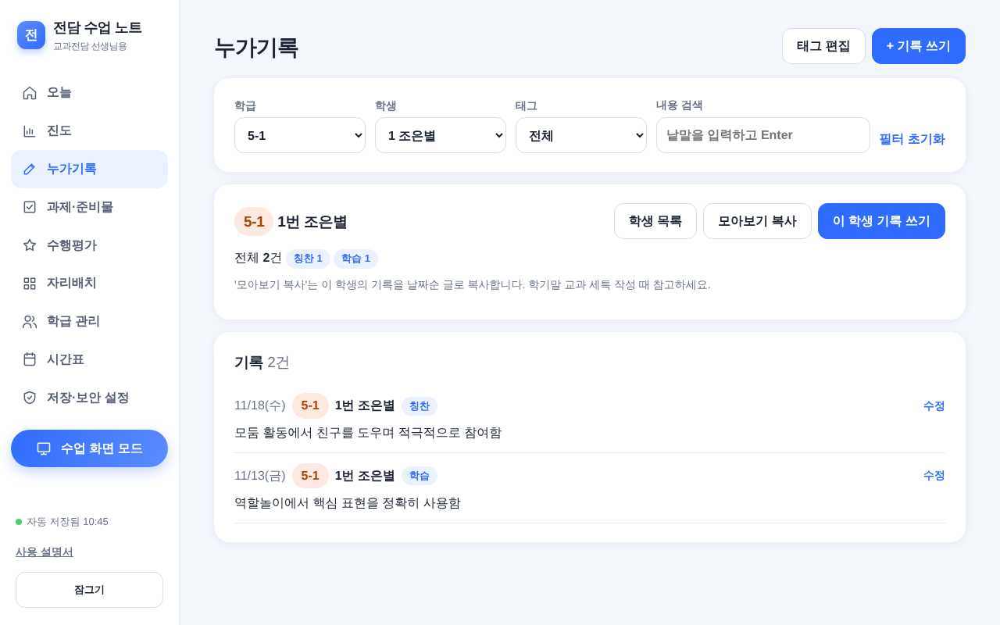
7과제·준비물 · 수행평가
과제·준비물
- + 새 항목에서 여러 반을 한 번에 골라 같은 과제를 만듭니다.
- 학생 이름을 누르면 완료 ✓ ↔ 미완료가 바뀝니다. 확인이 끝나면 마감합니다.
- 수업 화면의 제출 확인에서 학생이 직접 자기 이름을 누르게 할 수도 있습니다. (아래 9번)
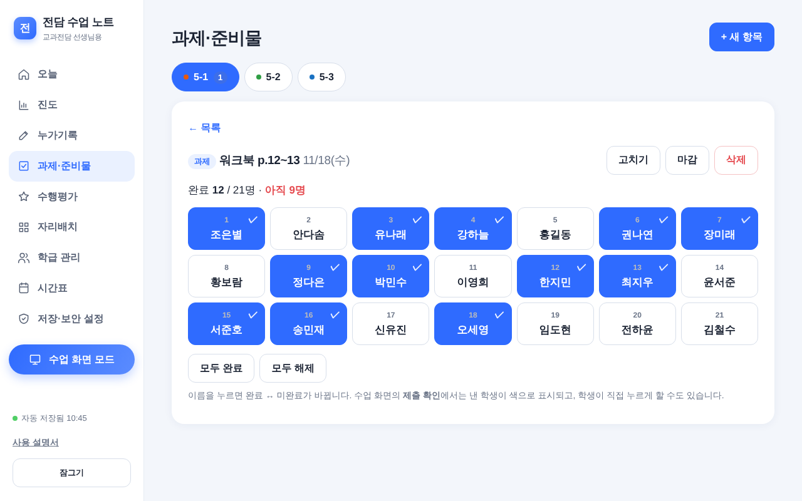
수행평가
- + 새 평가: 이름, 영역, 성취기준, 평가 단계(상·중·하 / 4단계 / ◎○△), 평가할 반을 정합니다. 평가 하나를 여러 반이 함께 씁니다.
- 학생마다 결과를 누르고 짧은 메모를 남깁니다. 같은 결과를 한 번 더 누르면 지워집니다. 반별 분포가 위에 보입니다.
8자리배치
- 배치 형태(1인 분단·2인 짝·4인/6인 모둠)와 줄·칸 수를 정합니다. 책상 편집으로 교실 구조에 맞게 빈 공간을 만들 수 있습니다.
- 학생을 끌어다 놓거나, 학생을 누른 뒤 옮길 자리를 누르면 자리가 바뀝니다.
- 무작위 배치: 학생을 누르면 나오는 고정 자리는 그대로 두고, 짝 피하기와 남녀 섞어 앉히기를 지켜 배치합니다.
- 배치 이력은 최대 20개까지 저장되고, 인쇄하면 자리표만 깔끔하게 나옵니다.
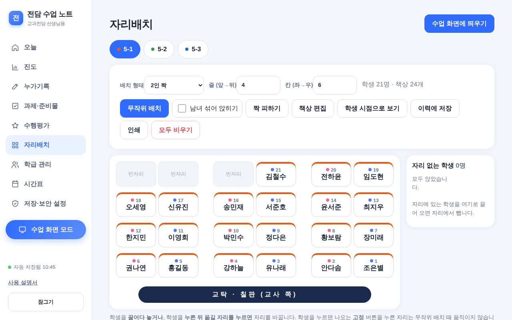
9수업 화면 (전자칠판)
왼쪽 아래 수업 화면 모드를 누르고 반을 고릅니다. 수업 화면에는 학생 이름과 자리만 나오고, 누가기록·수행평가·메모는 나오지 않습니다.
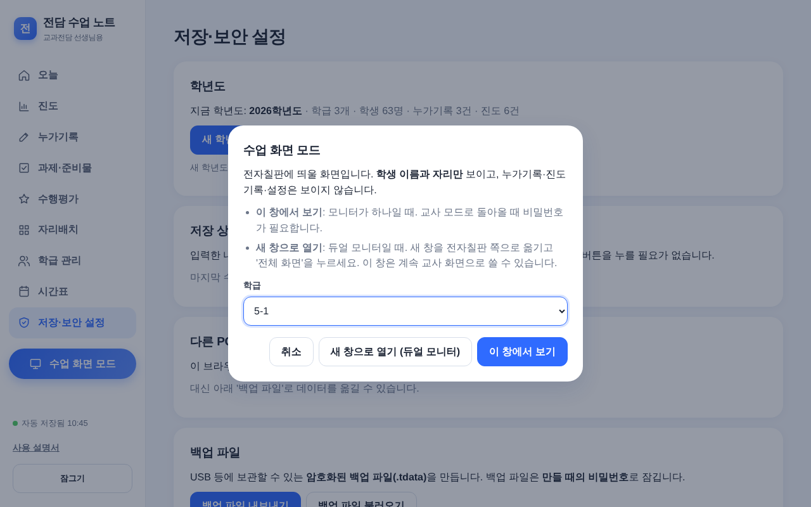
| 방법 | 이럴 때 |
|---|---|
| 이 창에서 보기 | 모니터가 하나일 때. 교사 화면으로 돌아올 때 비밀번호가 필요하고, 수업 중에는 자동 잠금이 꺼집니다. |
| 새 창으로 열기 (듀얼 모니터) | 새 창을 전자칠판 쪽으로 끌어다 놓고 전체 화면을 누르세요. 원래 창은 계속 교사 화면으로 씁니다. 저장은 교사 창만 하며, 학생 창에는 비밀번호·암호화 키가 없습니다. |
수업 화면 도구
- 학습 목표: 오늘 차시와 학습 목표를 크게 보여 줍니다.
- 칠판 메모: 준비물·안내 사항을 큰 글씨로 적습니다. 글자 크기를 고를 수 있고, 반마다 저장되어 다음 시간에도 남아 있습니다.
- 자리: 자리표 (학생 시점 / 교사 시점)
- 제출 확인: 낸 학생 이름에 색이 켜집니다. 학생 누르기 [허용 | 잠금]으로 학생이 직접 누르게 할 수 있습니다.
- 발표자 뽑기, 타이머(기본 시간 + 직접 입력), 모둠 만들기(남녀 고르게 · 짝 피하기 · 지금 자리대로)
- 칭찬 점수: 저장·보안 설정에서 켰을 때만 나옵니다. 개인·모둠 점수를 올리고, 0으로 되돌리기는 교사 화면(학급 관리)에서만 합니다.
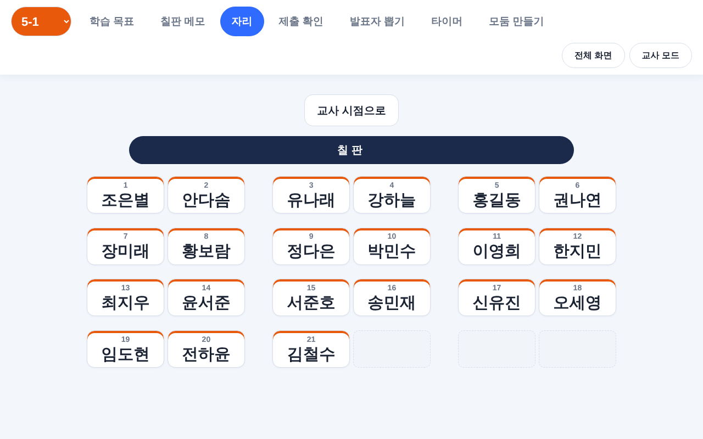
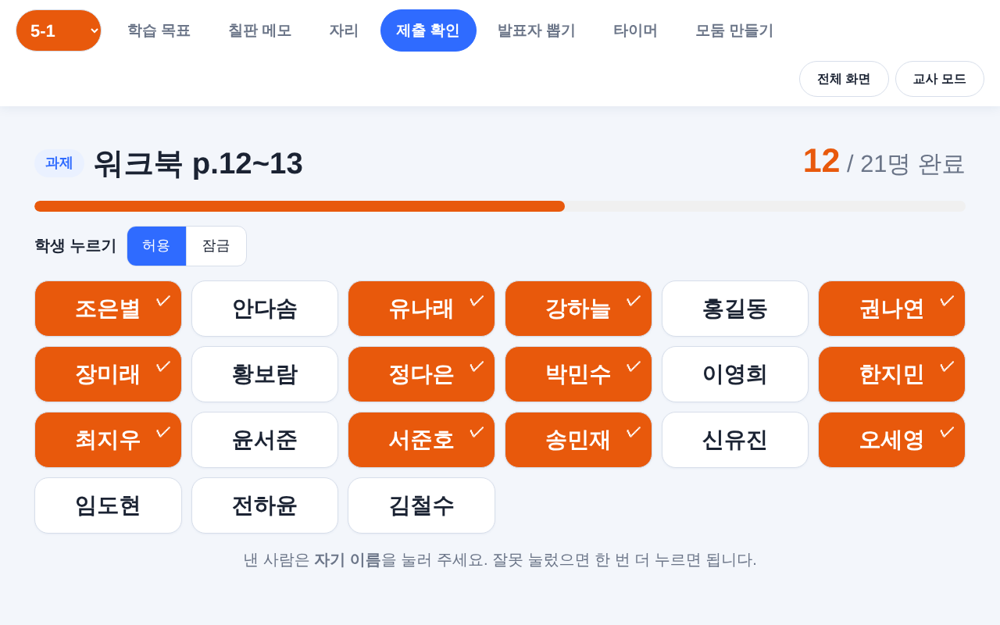
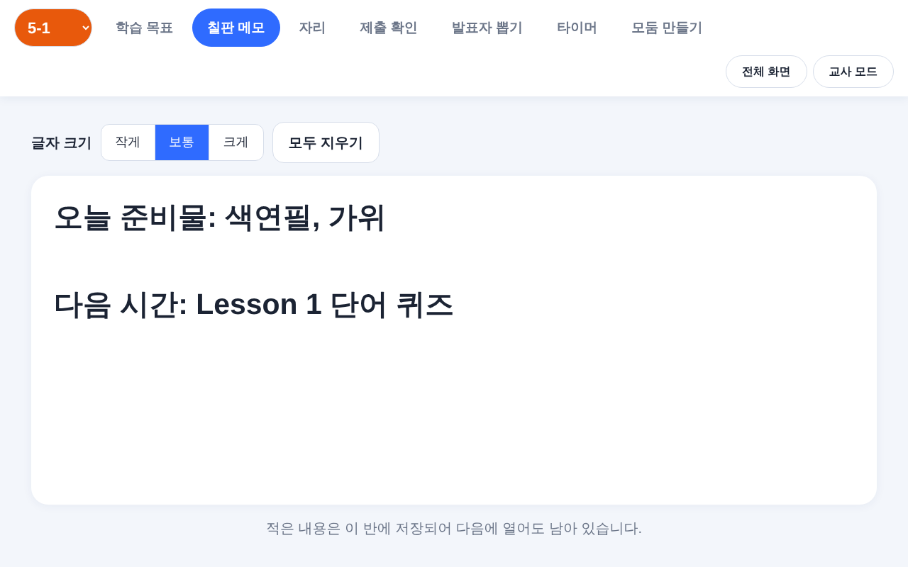
10저장 · 백업 · 다른 PC
- 자동 저장: 입력하는 즉시 이 컴퓨터 브라우저 안에 암호화되어 저장됩니다. 저장 버튼이 없습니다.
- 자동 잠금: 정한 시간(기본 10분) 동안 조작이 없으면 잠깁니다. 자리를 비울 때는 잠그기를 눌러 주세요.
- 백업 파일: 백업 파일 내보내기로 암호화된 .tdata 파일을 만들어 USB 등에 보관합니다. 파일은 만들 때의 비밀번호로 잠깁니다.
- 학교 PC ↔ 집 PC (자동 동기화): 구글 드라이브·OneDrive 같은 PC 동기화 폴더에 새 동기화 파일 만들기를 하면, 고칠 때마다 그 파일이 갱신됩니다. 다른 PC에서는 첫 화면의 파일에서 가져오기로 같은 파일을 고르고 같은 비밀번호를 넣습니다. (크롬·엣지에서만)
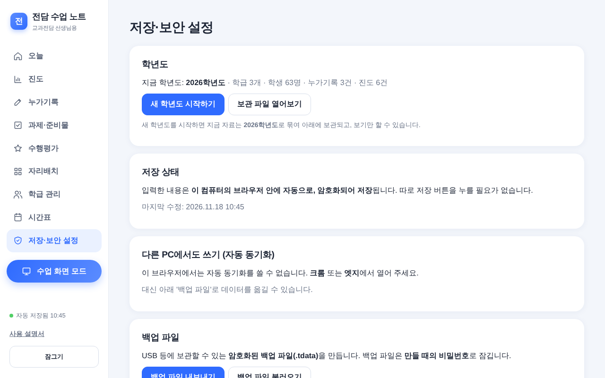
11새 학년도
- 저장·보안 설정 → 학년도 → 새 학년도 시작하기를 누릅니다. (시작 전에 백업 파일을 한 번 만들어 두세요)
- 지금 자료는 '○○○○학년도'로 묶여 보관됩니다. 단원 목록·교시 시간·설정은 그대로 가져가고, 원하면 반 구성(학년·반·색)도 가져갑니다. 학생 명단과 기록은 새로 시작합니다.
- 지난 학년도는 왼쪽 위 학년도 선택이나 설정의 보기로 보기 전용으로 볼 수 있습니다.
- 오래된 학년도는 파일로 꺼내고 삭제로 암호화 파일에 옮기고 앱에서는 지우세요. 필요할 때 보관 파일 열어보기로 볼 수 있습니다.
12파일로 받아 쓰기 · 옮겨오기
인터넷 주소 대신 HTML 파일 하나를 내려받아 쓸 수도 있습니다. 학교 네트워크에서 주소가 막힐 때나, 인터넷 없이 쓰고 싶을 때 좋습니다.
| 인터넷 주소로 쓰기 | 파일로 받아 쓰기 | |
|---|---|---|
| 여는 법 | 주소를 즐겨찾기 | 앱 파일 내려받기 → 크롬·엣지로 열기 |
| 업데이트 | 자동 (다음에 열 때 새 버전) | 새 파일을 다시 받아 열기. 같은 브라우저라면 자료는 그대로 이어집니다 |
| 사용 설명서 | 바로 열림 | 인터넷이 연결되어 있으면 열림 |
파일 ↔ 주소 사이에 자료 옮기기
브라우저는 '파일로 연 앱'과 '주소로 연 앱'의 자료를 따로 보관합니다. 옮길 때는 한 번만 아래처럼 하세요.
- 쓰던 쪽에서 잠금을 풀고 저장·보안 설정 → 백업 파일 내보내기로 .tdata 파일을 저장합니다.
- 새로 쓸 쪽을 열고 첫 화면의 파일에서 가져오기로 그 파일을 고른 뒤, 원래 비밀번호를 넣습니다.
- 잘 옮겨졌는지 확인한 뒤, 예전 쪽 자료는 모든 데이터 삭제로 지워 두면 깔끔합니다.
자동 동기화를 쓰고 있었다면 2번에서 동기화 파일을 고르면 되고, 동기화도 그대로 이어집니다.
13개인정보 · 보안 Q&A
학생 정보는 어디에 저장되나요?
선생님 컴퓨터의 브라우저 안에만 저장됩니다. 저장할 때 선생님 비밀번호로 만든 열쇠로 AES-256 방식으로 암호화합니다. 서버가 없어서 다른 곳으로 보내지지 않습니다.
앱을 인터넷 주소에서 여는데, 다른 사람이 내 자료를 볼 수 있나요?
아닙니다. 인터넷 주소에서 받아 오는 것은 앱 화면(프로그램)뿐이고, 학생 자료는 각 선생님 컴퓨터 안에만 있습니다. 앱은 외부로 아무것도 보내지 못하도록 차단되어 있습니다. 같은 주소를 쓰는 다른 선생님과도 자료가 섞이지 않습니다.
어떤 정보를 입력하나요?
학급(학년·반), 학생 번호·이름, (선택) 성별, 그리고 선생님이 남기는 수업 기록입니다. 연락처·생년월일 등은 입력받지 않습니다.
비밀번호를 잊어버리면요?
복구할 방법이 없습니다. 비밀번호가 어디에도 저장되지 않기 때문입니다. 꼭 따로 적어 두세요. 다른 PC나 동기화 파일도 같은 비밀번호입니다.
전자칠판에 기록이 보일 걱정은 없나요?
수업 화면에는 학생 이름·자리·과제 제목·(켠 경우) 칭찬 점수만 나옵니다. 누가기록·수행평가·메모·성별은 나오지 않습니다. 교사 화면으로 돌아오려면 비밀번호가 필요합니다.
여러 사람이 쓰는 컴퓨터에서 써도 되나요?
쓸 수는 있지만, 사용 후 꼭 잠그기를 누르세요. 컴퓨터를 반납하거나 학년이 끝나면 모든 데이터 삭제로 지워 주세요.
학년이 끝나면 자료를 어떻게 정리하나요?
새 학년도를 시작하면 지난 자료가 보관함으로 옮겨집니다. 학생 기록은 목적이 끝나면 정리하는 것이 좋으므로, 오래된 학년도는 파일로 꺼내고 삭제하거나 삭제해 주세요.